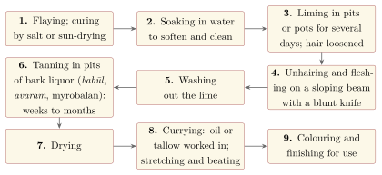
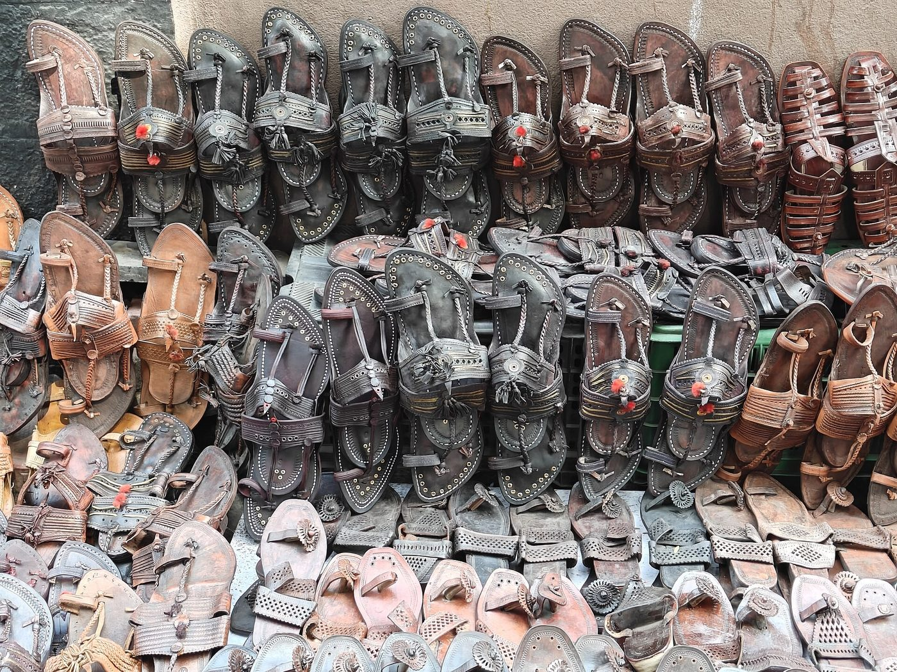
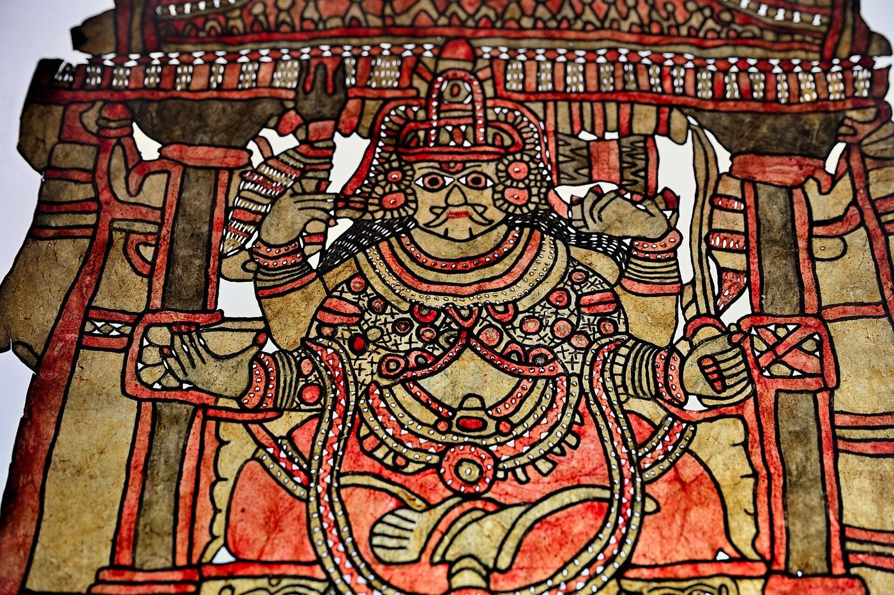

Chapter 9: Carman: Leather and Leather-Workers¶
Leather was indispensable to the agrarian and military economy of India. It lifted water from wells, held the plough-bullocks to the yoke, carried oil, ghee and water, blew the smith’s fire, sounded in the drum, protected the soldier and the horse, bound books and, above all, covered feet. Yet the people who made it were placed at the very bottom of the social order. Because their work began with the skins of dead animals, the castes who removed carcasses, tanned hides and made leather goods were treated as untouchable across most of India. Leather is therefore the clearest case of the paradox that runs through this volume: a craft on which everyone depended, practised by people whom the dominant texts and customs despised. This chapter describes the materials and processes of the tanner, the uses of leather in the village and the town, footwear and the leather arts, the colonial and modern leather industry, and the long struggle of leather-working communities against the stigma attached to their work.
9.1 Hide and Leather in Early Sources¶
Skin as such was not regarded as impure in early Indian ritual. In the Vedic soma sacrifice the stalks were pressed with stones on a bull’s hide (adhiṣavaṇa-carman), and the skin of the black antelope (kṛṣṇājina) was the seat and garment of the consecrated sacrificer and of the Vedic student. What came to be stigmatised was not the hide but the handling of carcasses and the work of turning raw skins into leather. The law-books place the leather-worker (carmakāra) among the lowest of the “mixed” castes and among those whose food a Brahmin should refuse (Chapter 1) (Olivelle 2005). Wooden sandals (pādukā), which avoid leather altogether, became the footwear of ascetics and the form in which the feet of gods and teachers were worshipped.
Other sources show leather in everyday use. The Arthaśāstra’s list of goods to be received into the treasury includes several kinds of animal skins, with notes on their regions of origin and their colours (2.11) (Kangle 1960–1965). The Buddhist monastic code devotes a whole section of the Mahāvagga, the “Section on Skins” (Cammakkhandhaka), to leather. It tells how the monk Soṇa Koḷivisa, who had been brought up in luxury, walked up and down in meditation until his feet bled, and how the Buddha then allowed monks to wear sandals with a single lining. It goes on to forbid sandals with many linings, sandals of particular colours and ornaments, and the skins of certain animals (Horner 1951). The rules assume a trade in leather goods of many grades, from plain sandals to ornamented footwear for the rich.
9.2 From Hide to Leather¶
The village leather-worker’s first task was the removal of dead cattle. In much of India the carcasses of animals that died in the village were the customary perquisite of the leather-working families, who were also obliged to remove them. They flayed the animal, sold or used the meat according to local custom, and took the hide. A raw hide decays within days. It was preserved (“cured”) by salting or by drying it in the sun, and could then be stored or sold to tanners in the towns.
Tanning turns the perishable protein of the skin into a stable material by combining it with tannins. The Indian tanner used vegetable tannins, and the sequence of operations, which varied in detail from place to place, followed the general pattern shown in Figure 9.1. The cured hide was soaked in water to soften and clean it. It was then laid in a pit or a large earthen vessel of lime and water for several days, which loosened the hair and the outer layer of the skin. The tanner scraped off the hair and the flesh on a sloping wooden beam with a blunt knife, and washed the hide to remove as much lime as possible. The tanning itself was done in pits or pots filled with a liquor of crushed bark and fruit. In the north the usual material was the bark of babūl (Acacia nilotica); in the south it was the bark of avaram (Senna auriculata, formerly Cassia auriculata). Myrobalan fruit, the same tannin that the dyer used (Chapter 5), was widely added. Light skins of goats and sheep needed some weeks; the heavy hides of buffalo used for well-buckets and sandal soles needed months, with the liquor renewed and strengthened from time to time. The tanned leather was dried, rubbed with oil or tallow while still damp to make it supple (“currying”), and stretched, beaten, coloured and finished according to its use.

Tanning was slow, wet, heavy and foul-smelling work. Tan-yards stood at the edges of villages and towns, near water and away from the houses of higher castes, and the smell of the pits clung to the workers, a fact that was used to justify their exclusion. The skill lay in judging the condition of the hide at each stage: how long to lime, how strong to make the liquor, when the tan had “struck through” the thickness of the hide, and how much oil the leather would take. In the nineteenth century the tanners of the Madras Presidency became known for half-tanned goat- and calf-skins, tanned with avaram bark and exported to Britain for finishing. The trade called them “East India tanned” skins, and they were one of the largest Indian leather exports before chrome tanning replaced the vegetable process (Roy 1999).
9.3 Leather in Field, Well and Workshop¶
Before the electric pump, the most important single use of leather in rural India was the lifting of water. In the well-irrigated plains of the north and the Deccan a pair of bullocks walking down a ramp drew a large leather bucket up from the well on a rope running over a pulley, and a man tipped its contents into the channel at the top. The bucket was called mot in Marathi and charsā or pur in parts of north India. It was made of thick buffalo leather and needed constant repair, as did the harness and the straps that bound the bullocks to yoke and plough. In the Maharashtrian village the Chāmbhār was one of the hereditary village servants (balutedār) who received a share of the harvest in return for making and mending the well-bucket, the sandals, the whips and the leather parts of the harness, while the Mahār removed dead cattle (Chapter 13). Irfan Habib’s survey of medieval technology places the bucket-and-pulley lift beside the Persian wheel as one of the two main ways of raising well-water for irrigation (Habib 2008).
Leather served many other needs. The water-carrier (bhishtī), usually Muslim, carried water through the streets of towns in a goatskin bag (mashak) slung over his back. Large jars of raw hide (kuppā) stored and carried oil and ghee. Bellows of goatskin blew the fires of smiths and founders (Chapter 3), and the drums of temple, court and village were headed and laced with hide (Chapter 7). Soldiers carried shields of thick buffalo or rhinoceros hide, often lacquered and fitted with bosses of metal, and cavalry depended on saddles, bridles and girths. In the towns, leather was used for boxes, trunks, belts, the bindings of books (Chapter 11) and the covers of instruments.
9.4 Footwear¶
Every region had its own footwear. In Rajasthan and Punjab the closed slipper called jūtī or mojaṛī, with a pointed or upturned toe, was made of vegetable-tanned leather and, for festive wear, embroidered with silk, metal thread and beads; Jodhpur, Jaipur, Patiala and Amritsar are well-known centres. In the Deccan the open sandal (chappal) took many local forms. The most famous is the Kolhapuri sandal (Figure 9.2), of heavy buffalo leather, with plaited straps and a loop for the big toe, made by Chāmbhār and Dhor families in the districts around Kolhapur and across the border in northern Karnataka. A good Kolhapuri is stitched entirely by hand and softens and darkens with wear.


The Kolhapuri shows how the old structures of the trade persist. The sandal was registered as a Geographical Indication in 2019, covering districts of Maharashtra and Karnataka, with the leather development corporations of the two states among the registered proprietors. In June 2025 an Italian fashion house showed sandals closely resembling Kolhapuris in a Milan collection without naming their source. After protests from artisans’ groups and Indian commentators it acknowledged the Indian inspiration, and talks followed about collaboration with the makers. The episode drew wide attention to the limits of what a GI can protect. It protects the name, not the design, and a design can travel freely while the makers who developed it over generations remain among the poorest workers in the trade (Chapter 15).
In the cities, footwear became an industry. Agra developed from the nineteenth century into one of India’s largest centres of hand-made shoes, made in small workshops by families of the Jāṭav community, who had long been classed as Chamārs. Owen Lynch’s study of the Jāṭavs of Agra in the 1960s showed how shoe-making families used the urban market, education, conversion to Buddhism and electoral politics to contest the status that caste assigned them, while the trade itself remained controlled largely by merchants of other communities (Lynch 1969).
9.5 Leather as an Art¶
Some of the most remarkable Indian leather-work was made for performance. In the shadow theatre of Andhra Pradesh (tolu bommalāṭa) and Karnataka (togalu gombeyāṭa), large, jointed puppets of goat or deer skin are scraped until they are translucent, perforated, and painted in strong colours, so that the light of a lamp behind the screen throws coloured shadows (Figure 9.3). Itinerant families perform the Rāmāyaṇa and Mahābhārata with them through the night. In Kerala the smaller puppets of tōlpāvakkūttu are used in temple performances of the Rāmāyaṇa in the Palakkad region, and in Odisha the rāvaṇachāyā uses opaque, unpainted figures. The puppet-makers of Andhra, among them those of Nimmalakunta in Anantapur district, now also make painted leather lampshades, wall-hangings and bags for urban buyers.


Leather and embroidery met in the work of the Mochīs of Kutch. Members of this cobbler and leather-working community developed a fine chain-stitch embroidery worked with a hooked awl (ārī), the same tool they used for stitching leather, and made embroidered garments and hangings for the courts and merchants of Kutch and Saurashtra. Their work, now in museum collections, shows a stigmatised community creating a courtly art (Irwin and Hall 1973). In Bikaner, the Usta painters decorate vessels and lamps of camel hide with raised and gilded designs, a technique also applied to other surfaces. Tooled and gilded leather covered the finest Indo-Islamic books (Chapter 11).
9.6 Tanneries and the Colonial Economy¶
In the nineteenth century leather became an industry in the modern sense. Raw hides and skins were exported from Calcutta and Madras in large quantities, and the half-tanned skins of Madras found a market in Britain. The army created a new demand for boots, saddlery, harness and belts. The Government Harness and Saddlery Factory at Cawnpore (Kanpur), set up in the 1860s, and private firms that followed it made the city the centre of military leather goods, and Kanpur’s tanneries along the Ganga grew with them. In Calcutta, Chinese immigrants established tanneries in the eastern suburb of Tangra; in the North Arcot district of Madras, Muslim merchant families of Vaniyambadi and Ambur built up the tanning trade. Chrome tanning, in which the hide is treated with salts of chromium, was introduced in the early twentieth century. It takes days rather than weeks and gives a lighter, more water-resistant leather, and it gradually displaced vegetable tanning for most purposes.
Tirthankar Roy’s study of the leather industry in the late colonial period shows how this growth changed the organisation of the work (Roy 1999). Ownership of the larger tanneries and the trade in hides passed largely to merchants and firms from outside the leather-working castes, while the wet and dirty work of the yards continued to be done by Dalit and, in some regions, Muslim labourers. The village leather-worker, meanwhile, lost much of his customary work as factory footwear spread and, later in the twentieth century, as the electric pump replaced the leather bucket. After independence the Central Leather Research Institute was founded at Madras in 1948, and leather became one of India’s major export industries, concentrated in the Vellore–Ambur region of Tamil Nadu, Kanpur and Unnao, Agra and Kolkata.
The industry’s waste has been a heavy burden on the rivers beside which it grew. Lime, sulphides, decaying flesh and, above all, chromium from the tan-yards polluted the Ganga at Kanpur and the Palar in Tamil Nadu. In 1987 the Supreme Court of India ordered tanneries at Kanpur that had not installed treatment plants to close, and in 1996, in a case brought by the Vellore Citizens’ Welfare Forum, it applied the principle that the polluter must pay to the tanneries of Tamil Nadu. Common effluent treatment plants and the relocation of the Kolkata tanneries to a leather complex at Bantala followed, but pollution and the exposure of workers to chemicals remain serious problems.
9.7 Caste, Stigma and Resistance¶
Because leather-work involved the skins of dead animals, the communities who removed carcasses, tanned hides and made leather goods, such as the Chamār, Mochī, Mādiga, Cakkiliyar, Dhor and Chāmbhār, were treated as untouchable (Chapters 1 and 13). The irony that the high-caste user of a well-bucket, a drum or a pair of sandals depended daily on the work of people whose touch he regarded as polluting was not lost on critics of caste. The poet-saint Raidās (Ravidās), a leather-worker of Banaras, became the focus of a religious movement among Chamārs in north India and the Punjab, and his poems speak of his trade without shame (Hawley and Juergensmeyer 1988). The makers of drums, many of whom came from leather-working castes, are discussed in Chapter 7.
Historians have also questioned the label itself. Ramnarayan Rawat has shown that in the United Provinces most Chamārs were agricultural labourers and cultivators rather than leather-workers, and that the identification of the whole caste with leather owed much to Brahmanical ideas of pollution and to colonial ethnography (Rawat 2011). Works such as G. W. Briggs’s The Chamārs (1920), written by a missionary, and the caste entries of the census and the gazetteers fixed a “traditional occupation” on a large and varied population (Briggs 1920). Chamār activists of the early twentieth century answered with histories of their own, tracing their descent from ancient rulers or from Raidās, and in the Punjab the Ad Dharm movement of the 1920s claimed a separate religion for the Dalits of the province (Omvedt 2008). In Maharashtra, B. R. Ambedkar’s movement of the 1920s and after urged the Mahārs and other Dalits to refuse the customary duties of removing dead cattle and eating carrion, which it treated as marks of servitude (Zelliot 1992).
The structures he attacked have not disappeared. In July 2016 Dalit men skinning a dead cow at Una in Gujarat were publicly flogged by men who accused them of killing it. The attack set off a wave of Dalit protest in which many leather-working families refused to remove carcasses at all, a public withdrawal of the very service that caste had imposed on them. In the village as in the factory, the leather trade still carries the history described in this chapter. Respect for the craft must include respect for the freedom of those born into it to leave it, and for the dignity of those who choose to stay (Chapter 15).
Further Reading¶
For the leather industry in the colonial period, Roy (1999); for the Chamārs and the critique of the “leather-worker” stereotype, Rawat (2011), with Briggs (1920) as an example of the older ethnography; for the shoe-makers of Agra, Lynch (1969); for the monastic rules on footwear, Horner (1951); for anti-caste movements, Omvedt (2008).